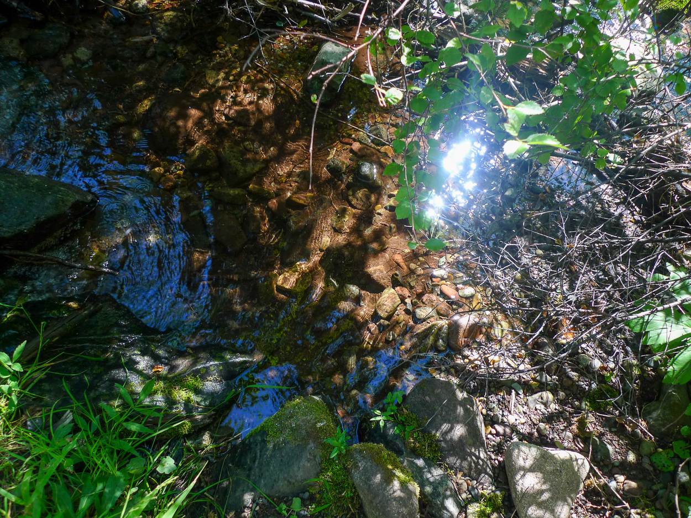
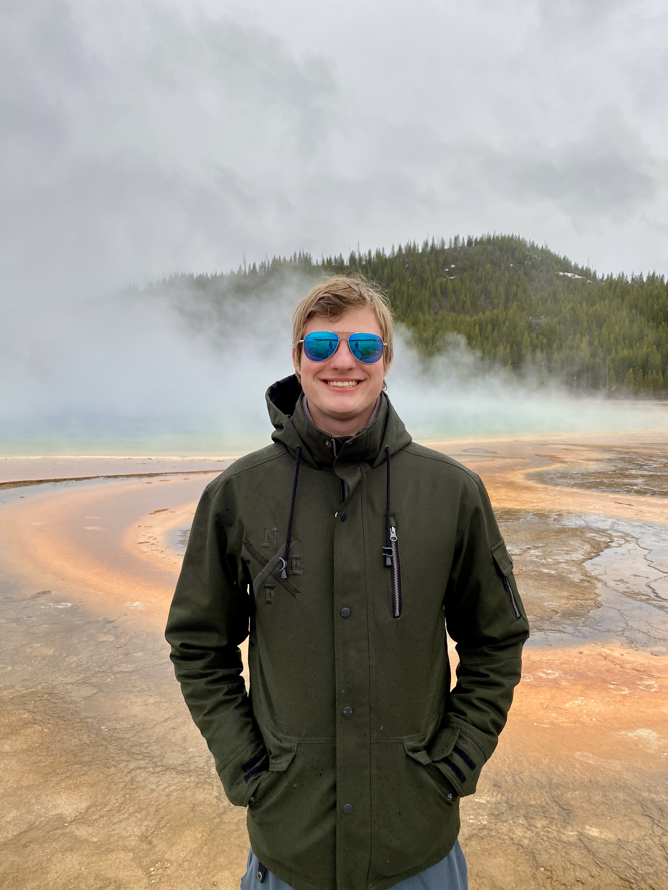

Hayden Creek
Serene flowing water in natural landscape
Bleeding Heart Vine
Close-up of a bleeding heart vine taken on a DSLR camera
Pearly Yarrow
Bright photo of flowers taken on a DSLR camera

Crown of Thorns
Close-up of a crown of thorns plant taken on a DSLR camera

Cattleya Orchids,
Close-up of a cluster of cattleya orchids taken on a DSLR camera

Mother of Thousands
Close-up of a mother of thousands growth taken on a DSLR camera

Cactus
Photo of a cactus plant taken on a DSLR camera

Wasp Resting on Carnation Flower
Close-up of a wasp resting on a carnation flower taken on a DSLR camera

Wasp Resting on Carnation Flower
Close-up of a wasp resting on a carnation flower taken on a DSLR camera

Black Eyed Susan
Group of black eyed susan flower taken on a DSLR camera

Boston Fern
Macro image of a Boston fern leaf taken on a DSLR camera

Marigolds
Yellow and orange marigold flower taken on a DSLR camera

Bleeding Heart
Close-up of a bleeding heart flower taken on a DSLR camera

Bleeding Heart
Secondary image of a bleeding heart flower taken on a DSLR camera

Coleus
Field of coleus leaves taken on a DSLR camera

Leaf Lettuce
Close-up of a leaf lettuce plant taken on a DSLR camera

Begonia
Begonia flower taken on a DSLR camera

Purple Heart
Intricate natural patterns of a purple heart plant taken on a DSLR camera

Peace Lily
Close-up of a peace lily plant taken on a DSLR camera

Natural Landscape
Beautiful natural surroundings

Coleus Flowers
Coleus flowers taken on a DSLR camera

Fuzzy Succulent
Unusual texture photographed on a DSLR camera

Dripping Water
Water dripping into pond taken on a DSLR camera

Running Water
Water flowing through pipes taken on a DSLR camera

Portrait Photography
Professional portrait work

Portrait Work
Professional portrait photography

Portrait Photography
Capturing personality and emotion

Thin Line
The story of how you have to break apart to become something new

Leftovers
Shavings lost during finishing work on pottery

What Could Be
Visualization of what could come from clay

Broken for Now
Broken pottery pieces that are waiting to be reworked into something new

Texture Study
Exploring textures and patterns

Last Steps
Final step in finishing work on pottery

A Full Class
A glimpse into a pottery class

A Leading Hand
Owner of studio shaping clay on a pottery wheel

A Guiding Hand
A teacher assisting a student in pottery class

Tools of the Trade
Tools forgotten after class

The Drying Rack
Collection of pottery pieces drying on a makeshift drying rack

Through the Chaos
Visual down the middle of a pottery studio

What I See
Painting capturing how the artist sees themselves

Mental Health
Visual representation of mental health awareness in black culture

History Won't Forget
Remembrance photo of historic black figure

The Weight of Remembrance
Visual representation of the weight of the past on a person